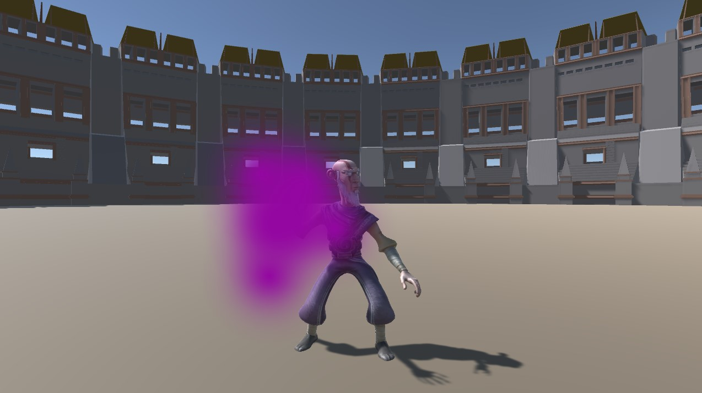
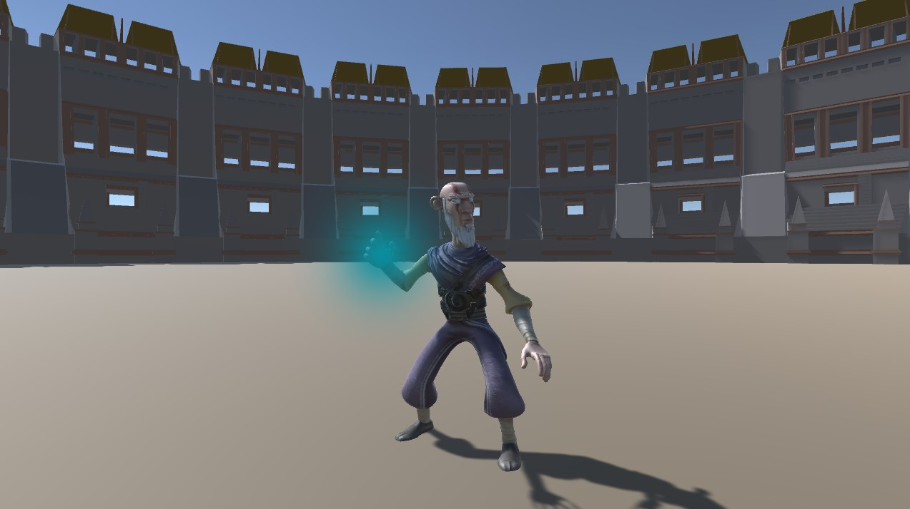
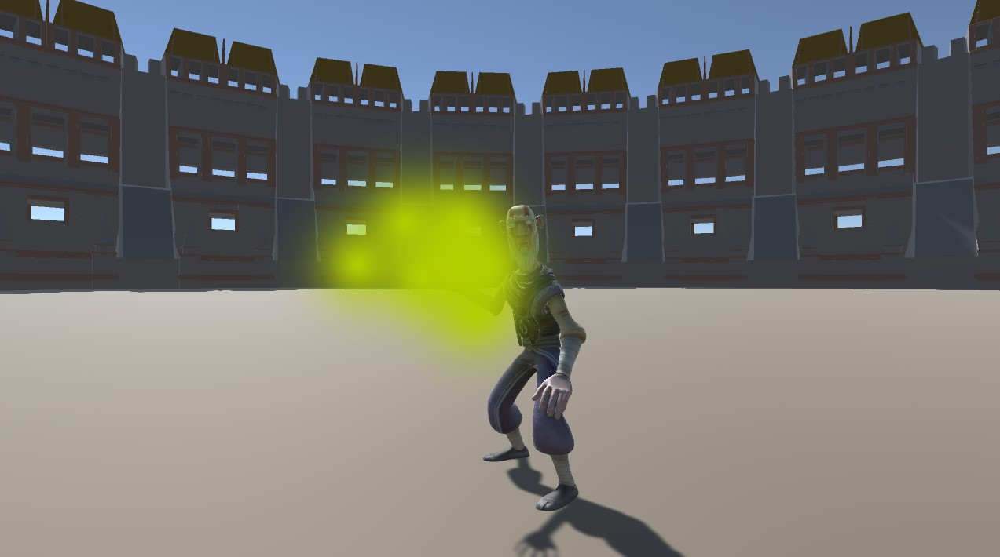
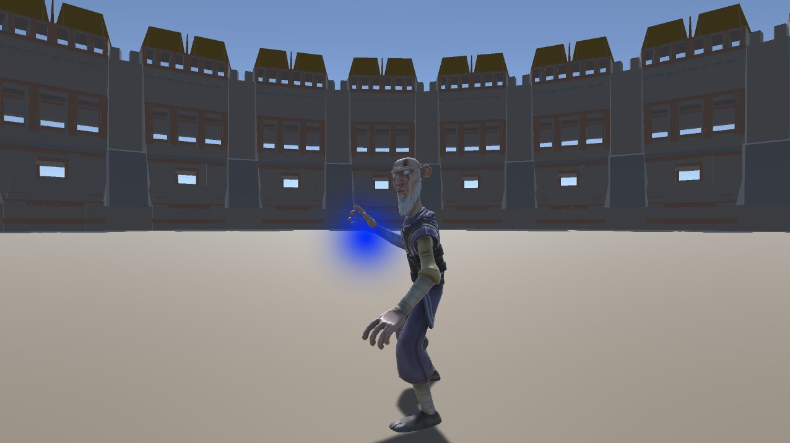
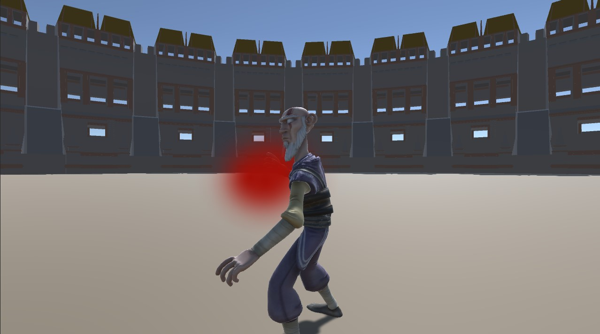

The Damage Spell
The all around spell every other spell branches off of. It's good range, speed, damage and recasting speed makes it a reliable choice for beginners and experts.
The Continuous Spell
Faster recasting speed but lower damage, good to use to consistently shoot out damage.
The Area of Effect Spell
Higher damage and spread but shorter range and longer recasting speed makes it a great choice when death stares you in the eye.
The Long Range Spell
Higher damage and speed but longer recasting speed makes it a great damage dealer from far away if you can hit your spells.
The Explosive Spell
A high damage dealing monster that produces a force that shoots around both you and your enemies. Great way to both jump out and into the fight.
